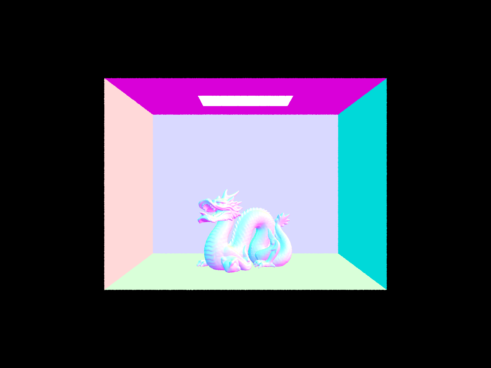
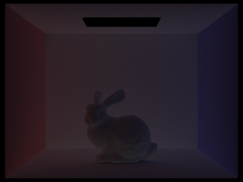
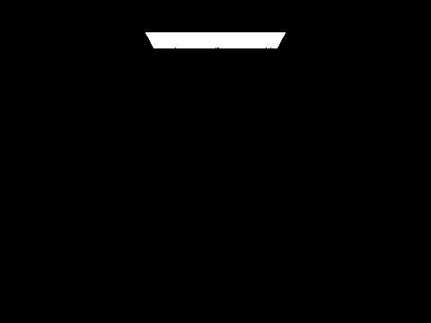

In this homework, I implemented path-tracing algorithms to generate realistic images of objects that model physical properties. This included acceleration algorithms like BVH and Adaptive Sampling, as well as the fundamental light tracing algorithms for Illumination. Specifically, the core components of my implementation included ray generation, ray-object intersections, Bounding Volume Hierarchy (BVH) acceleration, direct and global illumination, and adaptive sampling to improve rendering efficiency. To start, I built a ray generation system, converting normalized image coordinates into world-space rays using a transformation matrix. I then implemented intersection tests for triangles and spheres, which is necessary for detection of where rays hit objects. To reduce the amount of tests needed, I constructed a BVH acceleration structure, which significantly sped up rendering. For lighting and shading, I implemented direct illumination using both uniform hemisphere sampling and importance sampling, where the latter provided better efficiency by focusing samples on actual light sources. I then extended this to global illumination using recursive path tracing which allowed for realistic light transport, modeling indirect bounces and color bleeding. Lastly, I added adaptive sampling, which is useful to terminate ray-tracing tests on areas which have converged values within some confidence interval. Overall, I had a lot of fun working on this homework!
Part 1: Ray Generation and Scene Intersection
Ray Generation and Primitive Intersection:
I first converted the hFov and vFov angles to radians, and then we transform this into camera_x and camera_y coordinates by multiplying by \( 2 * x + 1 \) and \( 2 * y + 1 \) respectively. This scales our space to the required x, y, and shifts our coordinate to center the plane. Lastly, we normalize this vector, use the c2w matrix to transform into world space, and then clip its min_t and max_t to the nClip and fClip values respectively.
Triangle Intersection:
I used the common method that we discussed previously in class. Essentially, this function uses the same-side test. It first calculates the normal of the triangle by taking the cross product of two edge vectors, which helps establish a consistent orientation. Then, it computes vectors from the given point to each triangle vertex and uses cross products with the triangle edges to determine relative positioning. By taking dot products of these cross products with the triangle’s normal, the function checks whether the point is on the same side of all three edges. If all values are either non-negative or non-positive, the point is inside or on the triangle; otherwise, it is outside. We can then use this function in the has_intersect and intersect methods using the ray's point at time value t.
Normal Shading Examples:
Spheres

Dragon
Lucy
Bunny
Part 2: Bounding Volume Hierarchy
The Bounding Volume Hierarchy construction starts by computing a bounding box that encloses all primitives in the current node using bbox.expand(bb). If the number of primitives is less than or equal to max_leaf_size, a leaf node is created. Otherwise, the algorithm selects the splitting axis by choosing the one with the largest extent, determined by comparing bbox.extent[i] for i = 0, 1, 2. This essentially chooses the axis which has the maximum spanning dimension, and then the splitting position is set at the midpoint of that axis along the respective extent: double split_pos = bbox.min[axis] + bbox.extent[axis] / 2;. The primitives are then partitioned using std::partition, separating those with centroids less than the split position into the left child and the rest into the right child. If partitioning fails, I just split based on the number of points in each set. The tree is built recursively, so we call construct on the left and right newly created sets.
During ray intersection, the algorithm first checks whether the ray intersects the bounding box of a node using the slab method, computing intersection times for each axis: double t_plane_int_near = (min[i] - r.o[i]) / r.d[i]; and double t_plane_int_far = (max[i] - r.o[i]) / r.d[i];. If the ray misses the bounding box, it returns false. Also, iff the node is a leaf, it iterates over all primitives, checking for intersections. Another small detail, which I had a bug in initially, was that in has_intersection, the function can short-circuit upon finding the first hit, while in intersect, both children must be checked to find the closest intersection, where we prioritize the one closer to the ray’s origin for efficiency.
BVH Examples:
Max Planck - 0.2152s
Peter - 0.1461s
Without BVH, Max Planck took 526.2207s and Peter took 454.8721s. It's clear that BVH performs significantly better, and provides an exponential speedup as compared to a non-BVH approach. This makes sense, as BVH drastically reduces the amount of tests that need to be done. When you can eliminate regions on an exponential scale, you ensure that you only end up testing small areas that are very likely to have intersections. In other words, your false positive regions descrease. There are much less cases where you think a ray will intersect, test it, but then it doesn't.
Part 3: Direct Illumination
Uniform Hemisphere Sampling
The hemisphere sampling method estimates direct lighting by randomly selecting directions from a hemisphere centered around the surface normal. For each sampled direction, a shadow ray is cast to check if it reaches a light source without obstruction. If it does, the contribution from that light is calculated based on the material properties and angle of incidence. The problem, however, is that since this method does not prioritize sampling directions that actually lead to light sources, many samples may be wasted on directions that contribute nothing. From an image perspective, this leads to a lot of noise thus calling for a higher number of samples leading to increase in rendering time(decrease in efficiency).
Uniform Hemisphere Sampling
Importance Sampling
On the other hand, importance sampling improves efficiency by focusing samples only on directions where lights are located. If we know certain ray's won't contribute anything, we don't need to test them. Instead of sampling randomly, it queries the light sources directly, generating rays that point toward them. This greatly increases the likelihood of gathering meaningful lighting information. Additionally, it accounts for different types of lights, such as point lights and area lights, ensuring that their contributions are appropriately considered. By reducing the number of unnecessary samples, we can produce cleaner images with less noise. A benefit that shouldn't be overlooked, however, is still the need for fewer samples. We can obtain high quality while still having faster rendering speeds.
Importance Sampling - Prefer Directional Rays
Uniform Hemisphere vs Importance:
Bunny - Hemisphere Sampling
Bunny - Importance Sampling
Spheres - Hemisphere Sampling
Spheres - Importance Sampling
Soft Shadow Noise Comparison:
Spheres: 1 light ray
Spheres: 4 light rays
Spheres: 16 light rays
Spheres: 64 light rays
It's clear that an increase in light rays decreases the noise levels, especially in shadow areas. It also seems to be a drastic improvement, and not something minor. This makes sense, as increasing the samples per area light will smoothen out the effect that the light has on its surroundings.
In summary, uniform hemisphere is a decent representation, but suffers from noise and decreased efficiency. It can have high variance in scenes with small light sources and low samples, and probably won't perfrom great in high frequency lighting scenes In contrast, importance sampling directs rays toward known light sources, significantly reducing noise and variance by increasing the likelihood of meaningful contributions. In a broader sense, even when both algorithms have the same number of samples, importance sampling directs a majority of its rays to light sources meaning noise is smoothen out even over that short sample space.
Part 4: Global Illumination
The main functions responsible for lighting are est_radiance_global_illumination and at_least_one_bounce_radiance.
est_radiance_global_illumination: We have a few cases here. To start, if our max ray depth is 0 or we are accumulating bounces(and max depth is perhaps > 0), we need to add the zero bounce radiance to our final answer. Also, if max depth is indeed > 0, then we also need to add contributions from one bounce radiance and perhaps more than that, depending on the value of max_ray_depth.
at_least_one_bounce_radiance: Most of the work is in this function. Here, the big picture is to recursively follow a ray’s path through max_ray_depth iterations. It starts by transforming the starting ray’s coordinate system to match the surface’s normal, then computes the initial radiance from direct lighting at the intersection point. If the ray depth == 1, we return. Otherwise, we continue by sampling the BSDF to determine the direction for the next bounce. The recursion continues, adding contributions from subsequent bounces, with each step considering whether to accumulate the radiance or stop early.
However, there are a few nuances. When we have a max_ray_depth value, we need to make sure our estimator isn’t biased. To do that, we introduce Russian roulette sampling, which terminates a ray with probability p rather than after a fixed number of bounces. The other nuance is when we are or are not accumulating bounces. If we are, we just add the contribution of the next layer recursive call to L_out(after processing with f, cosine, and normalizing by the pdf). If we aren’t accumulating, then we need to set L_out to the recursive value. Lastly, we handle the case when there is no intersection.
Global Illumination:
Bunny Global Illumination
Spheres Global Illumination
Only Direct/Indirect Illumination:
Only Direct Illumination
Only Indirect Illumination
Accumulating Bounces Comparison:
m = 0, isAccumBounces = false
m = 0, isAccumBounces = true
m = 1, isAccumBounces = false
m = 1, isAccumBounces = true
m = 2, isAccumBounces = false
m = 2, isAccumBounces = true
m = 3, isAccumBounces = false
m = 3, isAccumBounces = true

m = 4, isAccumBounces = false
m = 4, isAccumBounces = true
m = 4, isAccumBounces = false
m = 5, isAccumBounces = true
We observe that with accumulation, the images tend to converge towards a certain lighting scheme, where marginally increasing the bounce limit doesn't significantly change the image quality. This makes sense looking over on the left when we render without accumulation, since each progressive step gets darker and darker, meaning that it contributes less to the overall image. This makes sense, because in the real world, light energy is lost over time. The nth bounce of the same particle physical will not contribute in the same way that it did on the first bounce, for example.
Also, the second bounce of light significantly brightens areas that would otherwise remain in shadowd. The third bounce, along with the second, brings the most change to the scene. It creates a scene that has better lighting on the walls.
Russian Roulette:

m = 0
m = 1
m = 2
m = 3
m = 4
m = 100
We don't see a huge change between 4 and 100, since the rays terminate much before then and in limit, lighting converges to a value much sooner than at the 100th bounce.
Sample-Per-Pixel Rate Comparison:
s = 1
s = 2
s = 4
s = 8
s = 16
s = 64
s = 1024
We can see how increasing the samples per pixel increases the resolution and quality of the image. This intuitively makes sense, as we're getting a more smoothen result of a given region by increasing the amount of samples per region. This significantly decreases noise in the image and makes the render look a lot better. More than quality, it also displays more fine grained features. For example, if we had a really intricate shape, increasing the samples per pixel would help bring those out rather than mask them.
Part 5: Adaptive Sampling
Adaptive sampling is a technique used in rendering to optimize the number of rays cast per pixel by dynamically adjusting based on variance. Instead of us rendering a fixed number of rays, the algorithm starts with a small batch and checks how much the radiance values fluctuate. If the variation is low, meaning the pixel has mostly converged, it stops early, saving computation. If the variance is high, it keeps sampling until the confidence interval falls within an acceptable range. This has two benefits: it significantly speeds up our rendering time but more importantly, it does that by focusing compute on areas that would infact benefit from more "attention." That is to say, noisy areas like shadows and reflections would get sampled more than a wall, perhaps.
Specifically, we keep a running sum of the estimated \( s1 = illum \) and \( s2 = illum^2 \). To reduce computational effort, we check for convergence every samplesPerBatch number of times. Convergence is defined as a threshold - that is,
double m = s1 / n_samples;
double v = (1.0 / (n_samples - 1)) * (s2 - ((s1 * s1) / n_samples));
double I = 1.96 * sqrt(v / n_samples);
if (I <= maxTolerance * m) {
// update buffer appropriately
return;
}
If we meet the threshold condition, we can say that the lighting has converged and additional traces would not provide much value. At this point, we return, after making sure to update our buffer.